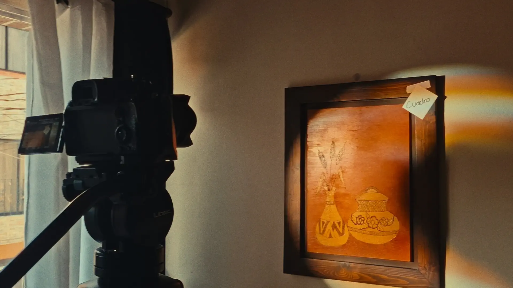
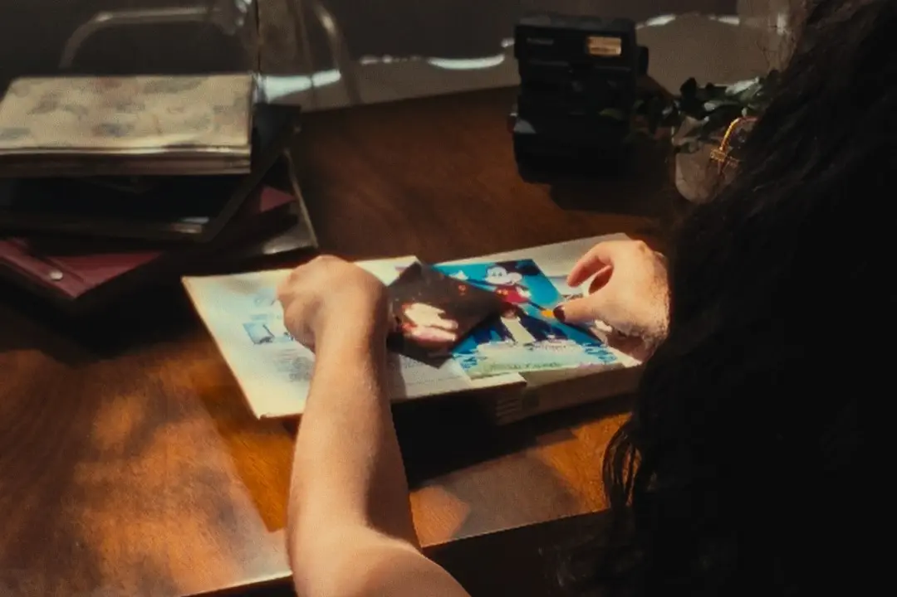
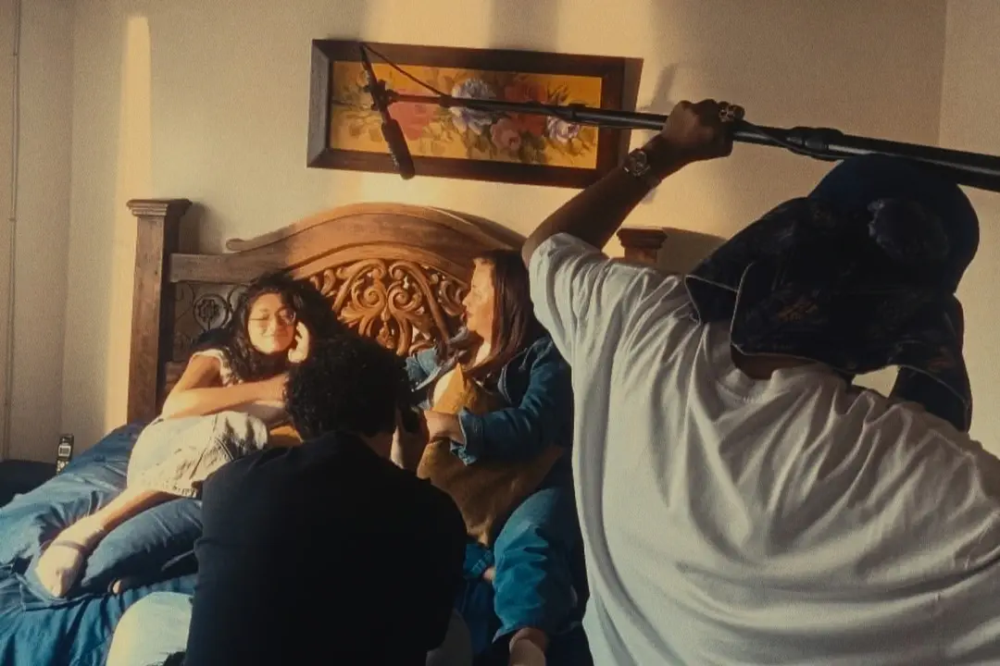
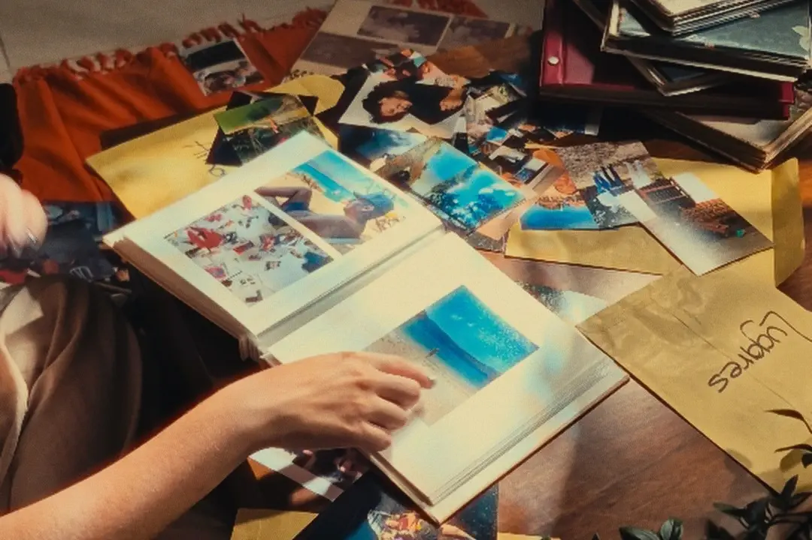
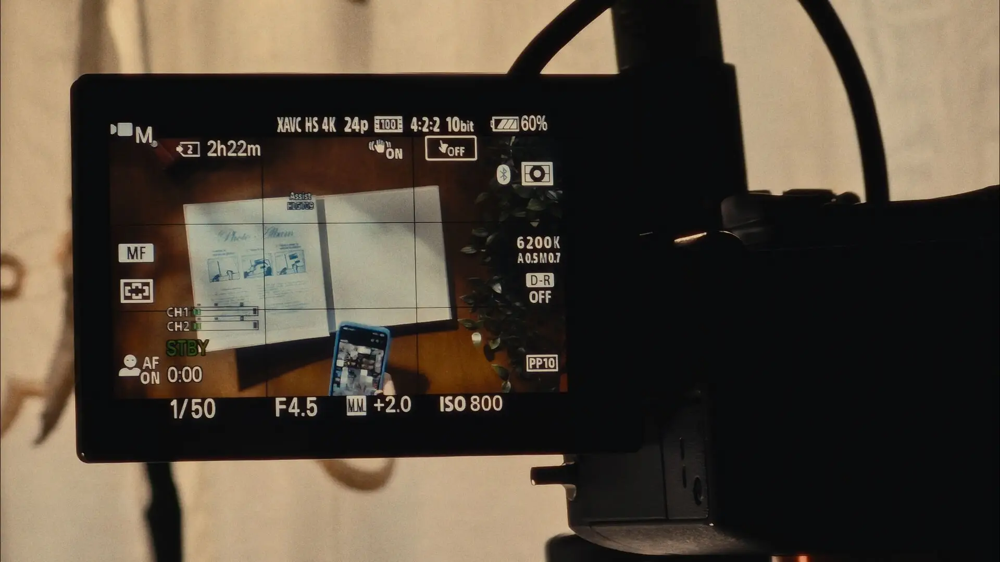
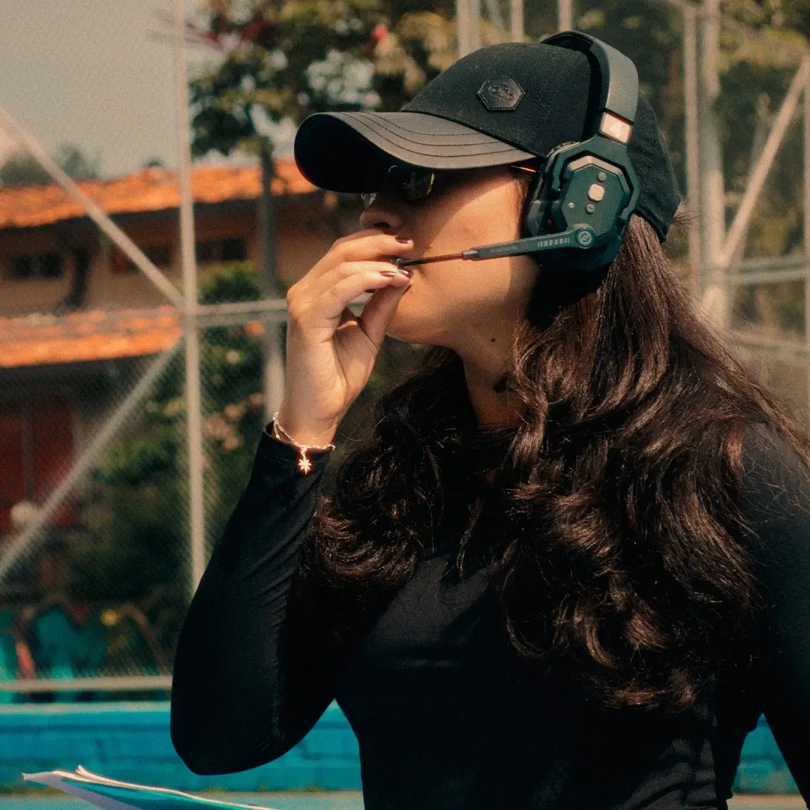
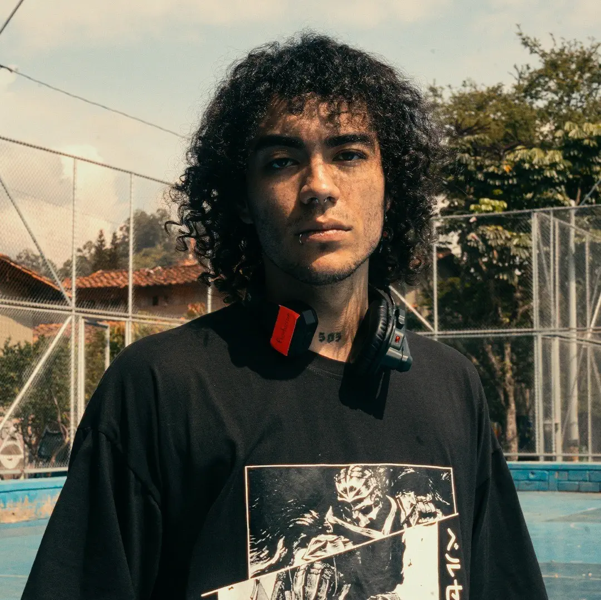
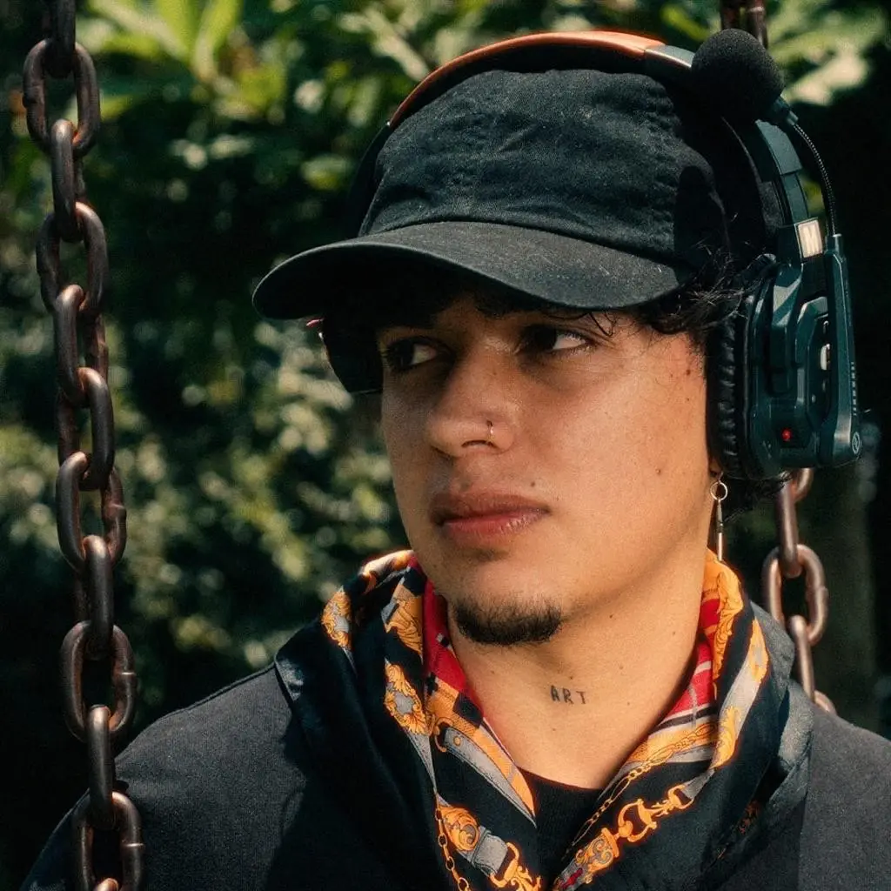
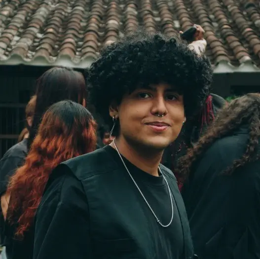
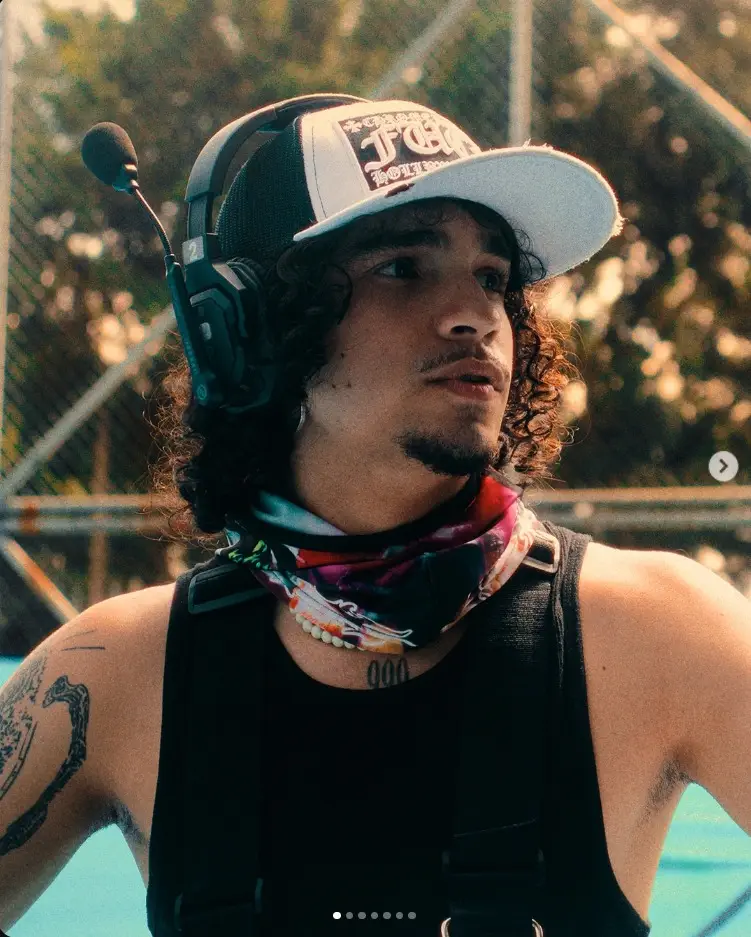

Asignatura
Lenguajes audiovisuales III: Realización documental
Docente
Ángela Patricia Carabalí Giraldo
Tatiana tenía 7 años cuando el Alzheimer le arrebató a su abuela, instalando en ella el miedo a la pérdida de recuerdos. Ese temor la llevó a construir un álbum fotográfico tangible como respuesta ante el paso del tiempo. En un mundo donde grabamos todo pero poco se preserva de verdad, Tatiana resiste al olvido con algo que pueden sostener sus manos.
Ver videoIntegrantes del proyecto
-

Tatiana Cuervo
Vélez -

Sebastian Hincapié Vélez -

Daniel Sanchez
Montoya -

Julián Echavarría
Arbelaez -

Simón Tabares
Velasquez